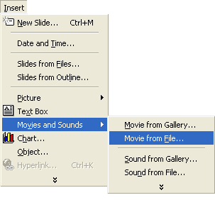
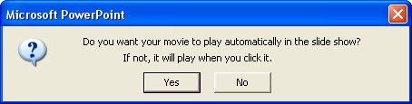
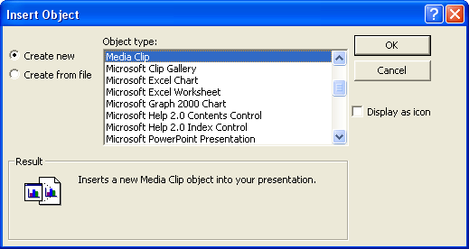
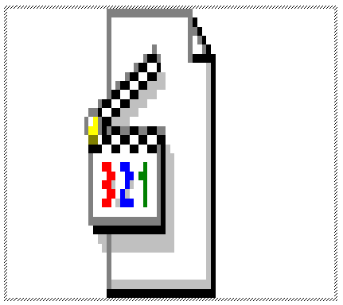
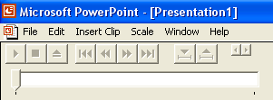
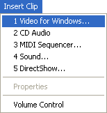
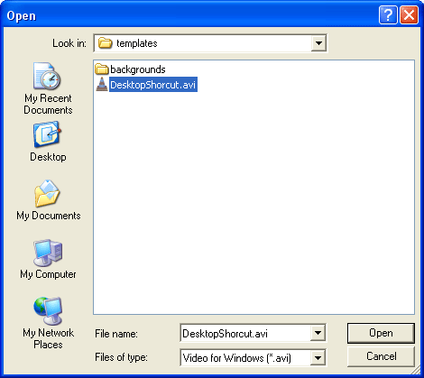
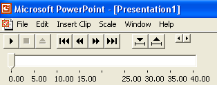
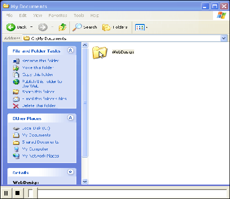

Free
powerpoint
Tutorials
|
Free
powerpoint
Tutorials
|
|
 home home |
Stay at Home and Learn | ||||
Adding Video to your PowerPoint Presentations |
|||||
|
Part 1, 2
Your presentations don't have to be static, with unmoving images and text. You can add movies and sounds to a slide quite easily. To add a movie, click Insert from the PowerPoint menu bar at the top. From the Insert menu, select Movies and Sounds to see the options:  Unfortunately, PowerPoint seems to offer you a limited number of movies formats to insert. But AVI and MPEG videos should be OK. Flash videos are no-go, though. We have our own movie we'd like to play, an AVI, so we've selected Movie from File. (Clicking Movie from Gallery would bring up the Media Clip library that is built in to PowerPoint, but there's not too much to choose from in the way of videos!) After navigating to your video's location, and clicking OK, PowerPoint will display a message:  If you prefer not to play the video as soon as the slide appears on screen, click No. You would then have to click on the video itself for it to play. One thing you don't get, however, is some playback controls, like Play, Pause, Stop, etc. You can insert the Media Clip object, though, to get some of these functions, and the ability to play a wider range of media formats. To see what this Object does, click Insert > Object from the PowerPoint menu bar at the top. From the Insert Object dialogue box, scroll down and click on Media Clip, as in the image below:  Click OK and PowerPoint will place a big icon on your slide:  Notice the menu bars at the top of PowerPoint, though:  Click on the Insert Clip menu to see the following:  The lists shows you what type of media you can play with this Object. We clicked Video for Windows. Browse for your video and click Open:  When you click Open, the video controls at the top will become available:  With these controls, you can play your movie to see if you like. When you press F5 to view the movie, however, these controls will largely
disappear. On the slide, the video will look like this, when it's playing:  The only controls you get are the Stop and Pause buttons. If you click Pause, it turns into a Play button.
In the next part, you'll see how to add sounds.
|
||||